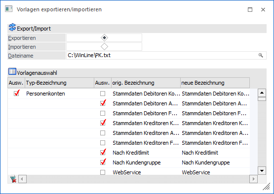
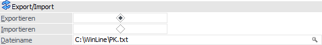
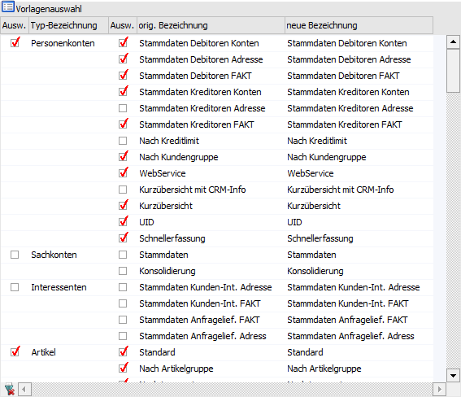
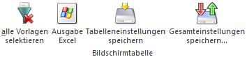
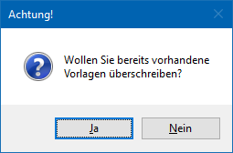

Im Menüpunkt
1 WinLine START
1 Vorlagen
1 Vorlagen exportieren/importieren
können bestehende Vorlagen in eine Datei exportiert bzw. von einer Datei importiert werden. Dies kann gemacht werden, damit die Vorlage z.B. zu einer anderen WinLine-Installation transferiert werden kann.
Hinweis
Grundsätzlich werden alle Vorlagen zentral in einer eigenen Datenbank gespeichert. D.h. eine einmal angelegte Vorlage steht allen Mandanten, die in der Installation mitwirken, zur Verfügung.

Export/Import

Ø Exportieren / Importieren
An dieser Stelle kann entschieden werden, ob Vorlagen exportiert oder importiert werden sollen. Hierzu muss die entsprechende Option gewählt werden.
Ø Dateiname
In diesem Feld kann die Datei gewählt werden, aus der importiert bzw. in welche exportiert werden soll (Pfad inkl. Dateiname ist mit max. 255 Zeichen begrenzt).
Tabelle "Vorlagenauswahl"

In der Tabelle können folgende Felder bearbeitet werden:
Ø Ausw.
Durch Aktivieren der Checkbox wird definiert, welche Vorlagen exportiert werden sollen.
Ø orig. Bezeichnung
Bezeichnung der Vorlage im Ausgangsmandanten.
Ø neue Bezeichnung
Unter der angegebenen Bezeichnung wird die Vorlage in der Zieldatei abgespeichert. Dementsprechend wird dieser Name bei einem Import automatisch verwendet.
Tabellenbuttons

Ø alle Vorlagen selektieren
Durch Drücken dieses Buttons werden sämtliche Vorlagen für den Export markiert.
Ø Ausgabe Excel
Durch Anwahl des Buttons "Ausgabe Excel" wird der Inhalt der Tabelle an Microsoft Excel übergeben.
Ø Tabelleneinstellungen speichern
Die Spalten einer Tabelle können grundsätzlich an beliebige Positionen verschoben, bzw. in der Breite entsprechend angepasst werden. Durch Anwahl des Buttons "Tabelleneinstellungen speichern" werden die Einstellungen benutzerspezifisch gespeichert und bei dem nächsten Aufruf des Programmpunktes wieder vorgeschlagen.
Ø Gesamteinstellungen speichern
Im Gegensatz zu "Tabelleneinstellungen speichern" können mit "Gesamteinstellungen speichern" mehrere Tabellenaufbauten gespeichert und nach Wunsch geladen werden. Zusätzlich werden Sonderfunktionen der Tabelle (z.B. "Spalte gruppieren") ebenfalls bei der Speicherung bedacht.
Buttons

Ø Ok
Durch Drücken des Buttons "Ok" bzw. der F5-Taste wird der Ex- bzw. Import gestartet.
Hinweis
Sollte die zu importierende Vorlage im Zielsystem bereits vorhanden sein, so erscheint die folgende Abfrage:

Ø Ende
Durch Drücken des Buttons "Ende" bzw. der ESC-Taste wird das Fenster geschlossen.